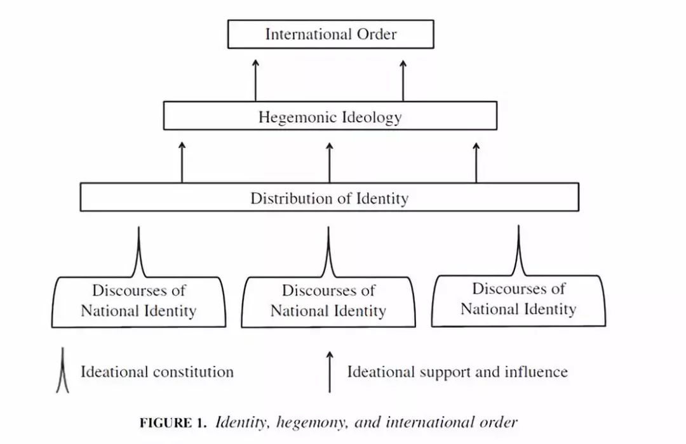
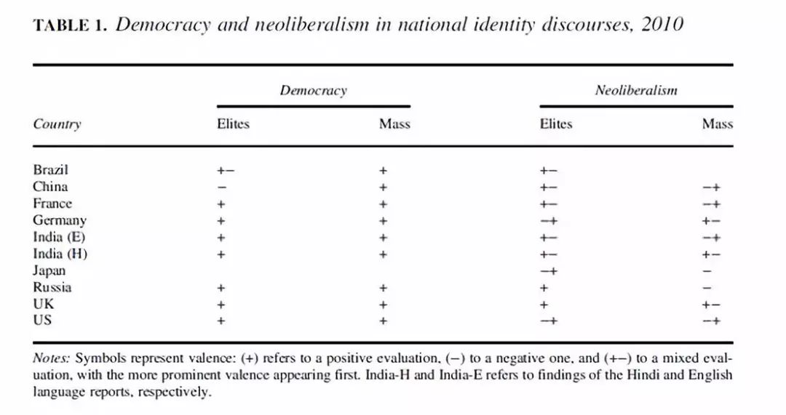

收录于合集

简 介
【文章原题】
The Distribution of Identity and the Future of International Order : China’s Hegemonic Prospects
【作者简介】
Bentley B.Allan，约翰霍普金斯大学政治学副教授。
Srdjan Vucetic，渥太华大学副教授。
Ted Hopf，新加坡国立大学政治学讲座教授
【文章来源】
International organization 11, July, 2018
【期刊介绍】
__
《国际组织》（ International Organization），简称“IO”，是一份经过同行评议的季刊，涵盖国际事务的各个领域。它成立于1947年，由剑桥大学出版社代表国际组织基金会出版。主编是Erik Voeten。2005年，国际关系学者对其所在领域“发表影响最大的文章的期刊”进行了一项调查，其中约70%的学者将国际组织列为4家“最具影响力的期刊”，在28家期刊中排名第一。根据期刊引文报告，2015年影响因子为3.213。
国际组织是领先的评议杂志，涵盖了整个国际事务领域。涵盖的学科领域包括：外交政策、国际关系、国际与比较政治经济学、安全政策、环境争端与解决、欧洲一体化、联盟模式与战争、谈判与冲突解决、经济发展与调整、国际资本流动等。
【期刊网址】
https://www.cambridge.org/core/journals/international-organization
【编译】 陈丽
【校对】 杨艺华 褚峰熠
目录：
摘要
理论框架
大国身份分布
理论分析
核心观点
现存的理论预测中国的崛起将引起权力转移，而现在的争论集中于权力转移将以暴力的方式发生还是以和平的方式发生。这些争论回避了理解未来国际秩序的两个中心问题：当前的西方霸权秩序有多强大？中国能够或将会领导一场成功的反霸权挑战的可能性有多大？我们认为未来国际秩序不仅仅是由物质实力决定的，也是取决于大国之间的身份分配。我们发展了霸权转移和稳定的建构主义解释，将身份分配在国际秩序中的作用理论化。在我们的解释中，霸权秩序依赖于一种合法的观念，这种观念必须与精英阶层和大众阶层的身份分配相一致。我们绘制了九个大国的身份分布，并评估了这种分布是如何支持当前西方新自由主义民主霸权的。我们推论中国在短期内不太可能成为霸主。
理论框架
首先，文章对已有的研究进行了总结，并提出质疑。传统观点认为霸权过渡是国际领导权由一个军事和经济强国向另一个军事和经济强国的转移，其核心问题是这种转移是暴力的还是和平的。精英的观念和信仰可能会改变转变的剧烈程度、发生的时间或转变的规则。这种转变本质上被认为是物质权力的动态过程，忽视了观念的作用。而一些认识到观念作用的研究者侧重关注精英的观念，低估了大众信仰的力量。这些研究忽视了霸权是一种基于权力分配以及精英和大众层面的观念分配的结构性现象。
随后，作者提出了自己的理论框架。作者延用考克斯对霸权的定义，认为霸权秩序包含三个要素：主导国家（或国家联盟）、合法化观念、在全球传播观念的制度网络。国际秩序是国家行为的一种定期的、持久的模式。在国际秩序中，跨领域的实践被重叠的价值观和准则联系在一起。但是价值观和规范本身并不构成一种秩序。当跨领域的行为和实践模式在较长一段时间内保持稳定或有规律时，国际秩序才会存在。霸权秩序是一种特殊的国际秩序，合法化观念有助于促进和保护构成秩序内的规则。一个拥有合法观念支持的霸权国，在其干预行为违反国际偏好或者违反普遍行为标准时，会面临较少的阻力。当霸权的观念缺乏合法性时，霸权国将难以领导和吸引追随国。
葛兰西认为，不考虑民众的常识观念，将难以建立霸权观念。而只有与大众的日常常识相共鸣的时候，霸权观念才能在大众中建立起来。作者假定当前的国际秩序是由不同的民主和新自由主义观念所支持的。新自由主义和民主的观念越深入地渗入到精英和大众中，那么霸权就会越强大。常识在构建国家认同中扮演着重要的作用。在这里，国家认同是指一系列社会类别，这些类别包含了什么构成了国家自我或者作为国家一员意味着什么。为此，一个国家不存在单一的国家认同。国家认同与霸权秩序之间存在着两种机制：作为常识的一部分，身份话语在国内层面上塑造了国家外交决策；霸权观念可以通过融入或输出到某些国家作用于国际秩序来发挥结构作用。作者总结道：大国国家认同话语组成了国家身份的分配，身份的分配支持和塑造了霸权观念，霸权观念反过来又使霸权国的领导地位和对国际秩序规则和制度的影响合法化。

只有在身份分配、霸权观念和挑战国观念之间取得特定条件时，霸权过渡才可能实现。第一，当身份分配和霸权观念相一致或相互呼应时，霸权有可能保持稳定；第二，当崛起国的身份与秩序下的观念和身份保持一致或有共鸣时，霸权就有可能保持稳定。当崛起国的身份和分配发生冲突时，霸权国会面临高成本的观念妥协。霸权国和崛起国之间发生冲突的可能性会加大，但是是否会导致战争取决于其他因素；第三，如果崛起国的国家认同话语与当前的国际秩序身份分配不一致，崛起国就不太可能构建一个成功的反霸权集团或构建另外一种国际秩序。
大国身份分布
作者选择了九个国家的领导人讲话、报纸、历史书、小说、电影作为文本来进行话语分析，得出了九个国家的身份分布示意图。作者逐个分析了这九个国家的身份分布。

理论分析
在对身份分布的分析基础上，作者认为西方霸权秩序有三种前景：在美国或一个大国联盟的领导下，当前秩序继续保持稳定；当前秩序可能解散，但是不会被取代；中国可能通过加入当前秩序并改变这一秩序，或者通过从外部建构另外一种秩序，来领导霸权转型。但是作者认为这三种前景都是不太可能的，并分别给出了自己的理由。作者还提出了另外一种可能性：由欧洲、中国、印度、巴西共同承担国际秩序的稳定。目前的实践已经出现了这种可能性。这将是一个类似于20世纪70年代和80年代从自由主义向民主的新自由主义的转变。
最后，作者为未来研究提出了展望：有抱负的崛起国可能通过什么机制和过程将现有大国联系在一起，形成一个反霸权集团？有抱负的崛起国如何获得有利的身份分配？这些过程需要多长时间呢？
*点击左下角“ 阅读原文 ”获取原文pdf版
声明
此文为国政学人微信公众平台外文编译系列文章之一，由国政学人编辑首发，不代表本平台观点。欢迎学人转发分享，转载请务必注明来源。如有任何问题，请联系guozhengxueren@163.com
更多阅读
国政学人 （ID：guozhengxueren)
为方便学人及时阅读高质量文章
别忘把国政学人设置 星标 哦~